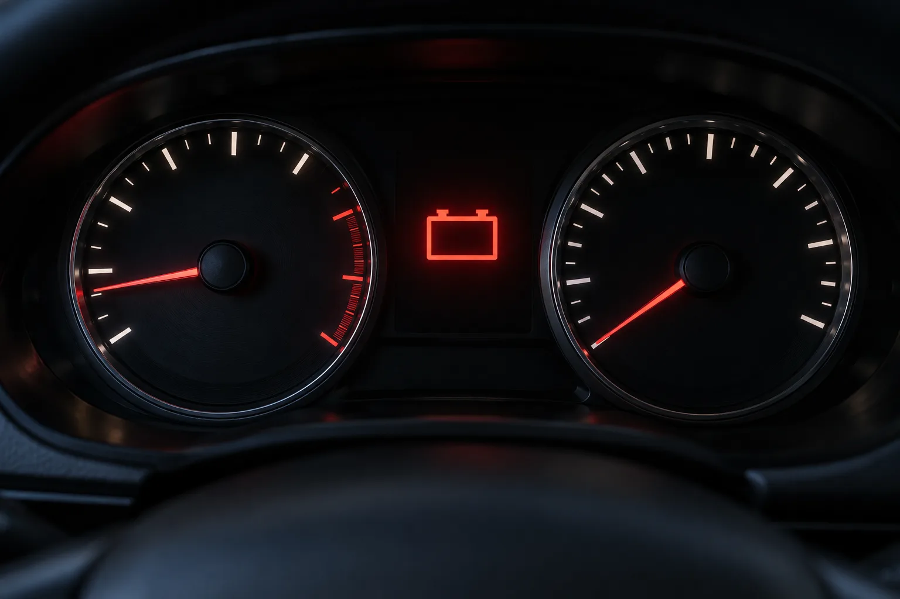
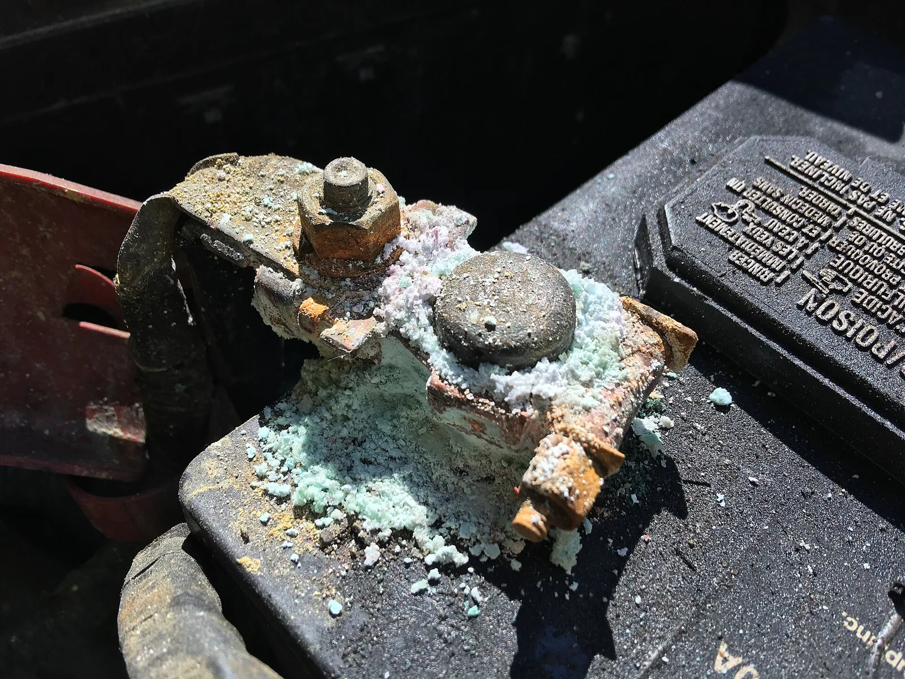
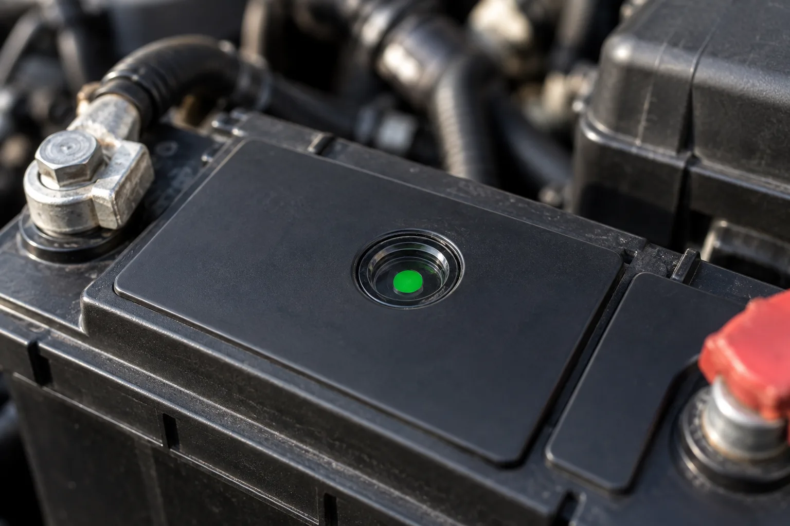
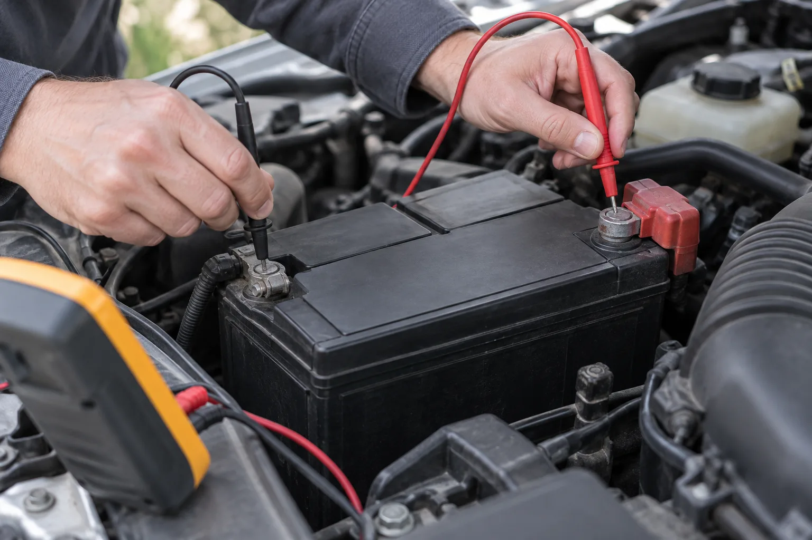
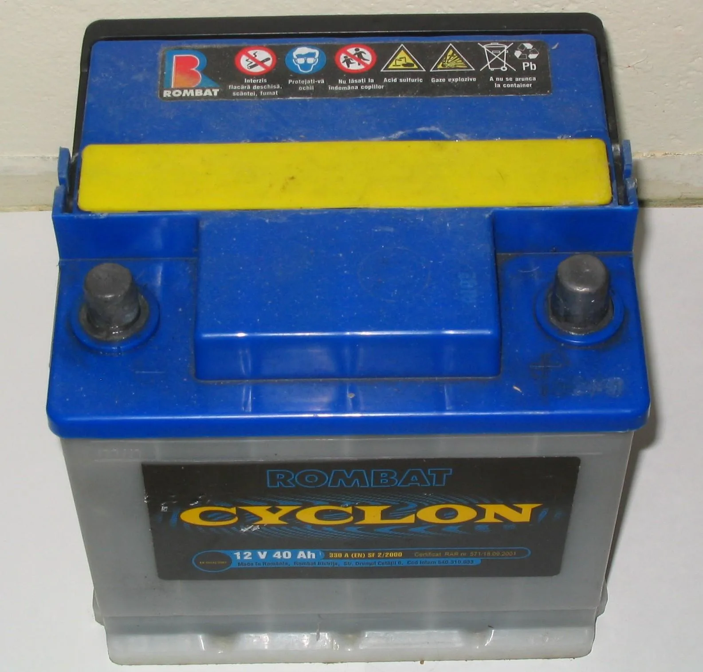
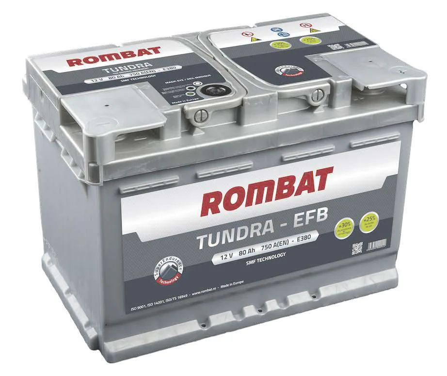
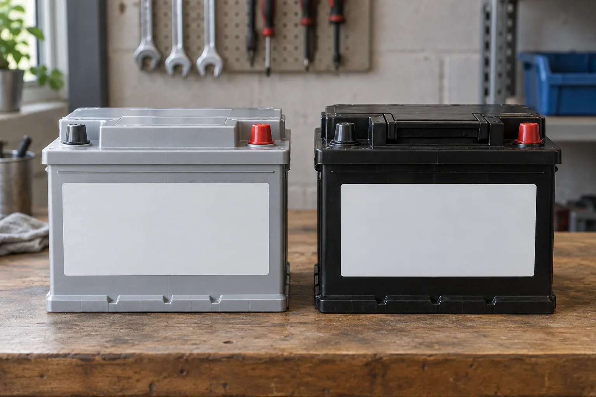
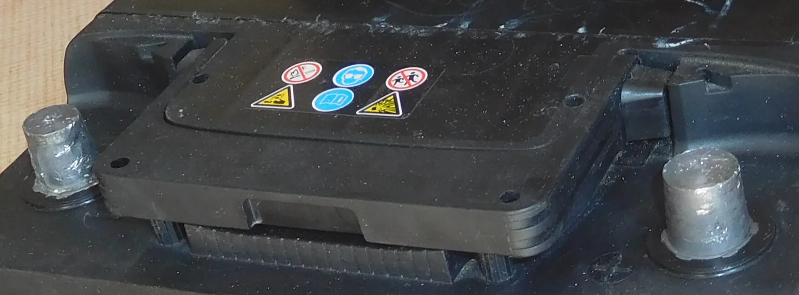
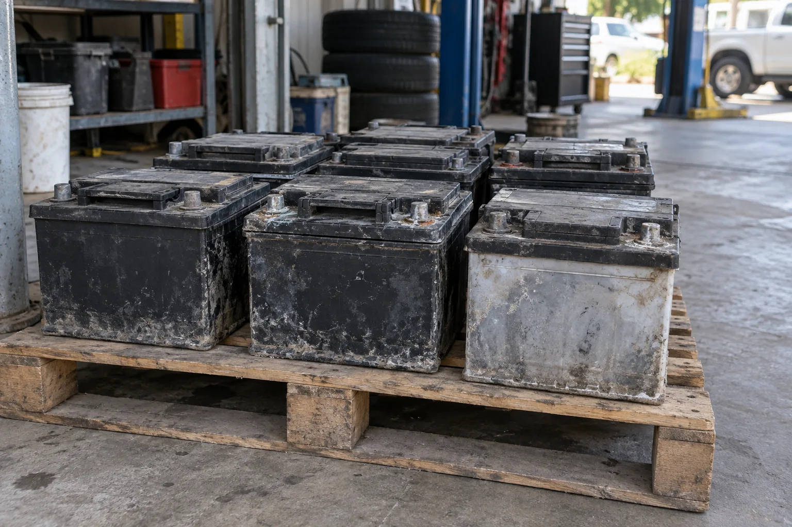

▲ 정비사가 엔진룸에서 낡은 배터리를 꺼내는 모습. 배터리는 방전 전에 신호를 보내는 경우가 많다 이미지=AI 생성
아침에 시동을 걸 때 '끼릭끼릭' 소리가 예전보다 길어졌다면, 배터리가 보내는 첫 신호일 수 있다. 자동차 12V 배터리는 어느 날 갑자기 죽는 것처럼 보이지만, 실제로는 몇 주에서 몇 달에 걸쳐 조금씩 힘이 빠진다. 문제는 대부분 방전돼 출근길에 멈춰 선 뒤에야 교체를 떠올린다는 점이다. 이 글은 방전 대처법이 아니라 "지금 바꿔야 하나, 더 써도 되나"를 스스로 판단하는 기준을 정리했다.
1. 수명이 다해간다는 신호 네 가지
배터리 수명은 '몇 년'보다 '어떤 증상'으로 판단하는 게 정확하다. 흔히 교체 주기로 3~4년 또는 5만km(파이낸셜뉴스, 케이카 진단실장 인터뷰), 3년 또는 3만~4만km(GS칼텍스 Kixx)가 거론되지만, 단거리 위주 주행이나 블랙박스 상시녹화, 잦은 장기 주차는 수명을 크게 줄인다. 반대로 5년 넘게 멀쩡한 배터리도 있다. 아래 신호가 보이면 연식과 관계없이 점검을 받아 보자.
① 시동이 눈에 띄게 무겁다
시동 모터가 도는 소리가 느리고 길어졌다면 배터리가 순간적으로 내줄 수 있는 전류가 줄었다는 뜻일 수 있다. 특히 기온이 떨어지는 아침에만 유독 무겁다면 노화가 진행된 배터리일 가능성이 크다. 저온에서 배터리 성능이 떨어지는 원리와 CCA(저온 시동 전류) 개념은 CarPrism의 기온 하강기 배터리 전압 관리법에 자세히 정리해 두었다.
② ISG(오토 스탑)가 예전보다 잘 안 걸린다
신호 대기 때 엔진이 자동으로 꺼지던 차가 요즘 들어 잘 꺼지지 않는다면 배터리를 의심해 볼 만하다. 기아 취급설명서는 ISG가 엔진을 자동 정지하는 조건 가운데 하나로 "배터리 센서가 활성화되고 충전 상태가 적절할 때"를 꼽는다. 즉 차가 배터리 상태가 충분치 않다고 판단하면 스스로 ISG를 쉬게 한다. 물론 외기 온도, 에어컨 사용, 워밍업 여부 같은 다른 조건 때문일 수도 있으니 단독 판단 근거로 삼기보다는 다른 신호와 함께 보자. 조건을 충족하는데도 ISG 표시등(노란색)이 계속 켜지거나 계기판에 관련 문구가 뜨면 ISG 시스템과 배터리 점검이 필요하다고 기아는 안내한다.
ISG 차에서 이 신호를 읽을 때 한 가지 함정이 있다. 최근 블랙박스 배선 작업이나 정비로 배터리 - 단자·센서 커넥터를 분리했다 다시 연결했다면, 배터리가 멀쩡해도 센서가 비활성 상태여서 ISG가 멈춰 있을 수 있다(현대·기아 취급설명서). 이럴 땐 배터리를 의심하기 전에 6장의 센서 활성화 절차부터 해 보자. 반대로 그런 이력이 없는데 ISG 작동이 눈에 띄게 줄고 시동까지 무거워졌다면 교체 신호로 볼 만하다. ISG 차는 정차 때마다 시동을 끄고 다시 거는 만큼 배터리 부담이 커서, VARTA는 이런 차에는 EFB·AGM만 견딜 수 있다고 설명한다.

▲ 계기판에 배터리 모양 경고등이 켜진 모습. 주행 중 이 경고등이 켜진다면 배터리보다 충전 계통 이상일 수도 있어 바로 점검이 필요하다 이미지=AI 생성
③ 점프 스타트·긴급출동을 반복한다
실내등을 켜 두는 실수로 한 번 방전된 것은 배터리 탓이 아닐 수 있다. 하지만 특별한 원인 없이 한두 달 사이 두 번 이상 방전됐다면 충전을 받아도 전기를 오래 붙잡아 두지 못하는 상태, 즉 수명 말기일 가능성이 높다. 점프 스타트 요령은 점프 스타트로 직접 살리는 법, 블랙박스 때문에 반복된다면 블랙박스 상시녹화 방전 관리법, 차박 중 전기 사용이 원인이라면 차박 배터리 전력 계산법을 참고하자.
④ 점검창이 흰색이거나 케이스에 이상이 보인다
배터리 윗면의 동그란 점검창(인디케이터) 색이 바뀌었거나, 케이스가 부풀었거나, 단자 주변에 흰·푸른 가루가 두껍게 앉았다면 눈으로도 확인되는 신호다. 점검창 색 읽는 법은 다음 장에서 설명한다.

▲ 배터리 단자와 케이블 클램프에 흰색·청록색 부식 가루와 녹이 두껍게 앉은 모습. 접촉 불량으로 시동이 약해질 수 있어 점검이 필요하다 ⓒ MarkBuckawicki, Wikimedia Commons (CC0)
2. 스스로 확인하는 법 — 점검창·전압·제조일자
점검창 색: 제조사마다 다르다
국내 MF 배터리에서 흔히 쓰는 기준은 녹색=정상, 검은색=충전 필요, 흰색=교체 필요다(파이낸셜뉴스, 케이카 진단실장). 점검창은 배터리 내부 전해액의 비중을 보여준다. 다만 두 가지를 기억하자. 첫째, 색 구분과 의미는 배터리 제조사·제품마다 다를 수 있으니 배터리 윗면 라벨의 설명을 먼저 확인해야 한다. 둘째, 점검창이 녹색이어도 오래된 배터리는 금방 방전될 수 있다. 점검창은 참고용이고, 전압과 제조일자를 함께 봐야 한다.

▲ 배터리 윗면의 점검창에 녹색이 보이는 모습. 색의 의미는 제품 라벨 설명과 함께 확인해야 한다 이미지=AI 생성
전압: 12.4V가 기준선
멀티미터를 DC 전압(20V 범위)에 맞추고 빨간 탐침을 + 단자, 검은 탐침을 - 단자에 댄다. 시동을 끄고 한동안 쉬게 한 뒤 재야 정확하다. 독일 배터리 제조사 VARTA는 일반 배터리의 이상적인 개방 전압을 약 12.8V로 보고, 12.4V 아래로 떨어지면 가능한 한 빨리 충전해야 한다고 안내한다. 낮은 충전 상태가 계속되면 극판에 황산납이 굳는 설페이션으로 배터리가 상한다는 설명이다.
중요한 건 한 번의 숫자보다 추이다. 충전하거나 한참 주행한 뒤에도 금세 12.4V 아래로 내려간다면 충전을 붙잡아 두는 능력이 떨어진 것이다. 시동 켠 상태의 충전 전압까지 포함한 전압별 판단표는 배터리 전압 관리법 기사에 있다. 전압만으로 부족하다면 정비소의 배터리 테스터(내부저항·CCA 측정)로 실제 남은 성능을 확인하는 것이 가장 확실하다.

▲ 멀티미터 탐침을 배터리 +·- 단자에 대 전압을 재는 모습 이미지=AI 생성
제조일자: 케이스에 찍힌 코드 읽기
배터리 케이스 윗면이나 옆면에는 제조 로트 번호가 각인·인쇄돼 있다. 읽는 방식은 제조사마다, 같은 제조사라도 시기마다 다르다. 예컨대 로케트 배터리를 만드는 세방전지가 공개한 '제조번호 읽는 법'에 따르면 차량용 배터리는 다음과 같다.
- 2015년 6월 이후 생산분: 일(2자리)-월(2자리)-연도(4자리)+제조라인. 예) 01-01-2019B → 2019년 1월 1일, B라인
- 2015년 6월 이전 생산분: 제조라인(2자리)+연도 끝자리(1자리)+월(A~L 알파벳)+일(2자리). 예) KA5A01 → 광주 A라인, 2015년 1월 1일(A=1월)
델코(Delkor)·아트라스BX 등 다른 브랜드는 코드 구조가 다르고, 인터넷에 도는 해석표 중에는 제조사 공식 자료가 아닌 것도 많다. 따라서 해당 배터리 제조사의 공식 안내로 확인하자. 코드를 읽기 어렵다면 교체 영수증이나 정비 이력, 배터리에 붙은 장착일 스티커도 단서가 된다. 장착한 지 3년이 넘었는데 위 신호가 겹친다면 교체를 검토할 때다.

▲ 배터리 라벨에는 전압(12V), 용량(40Ah), 저온 시동 전류(330A, EN 기준) 같은 규격이 적혀 있다. 교체할 때 이 숫자를 기준으로 맞춘다 ⓒ Wikimedia Commons (Public domain)
3. 무엇으로 바꿀까 — 일반·EFB·AGM, 그리고 Ah·CCA
가장 중요한 원칙은 '지금 달린 것과 같은 종류, 같은 규격'이다. 요즘 차 배터리는 크게 세 종류다.
| 구분 | 구조 | 충·방전 내구성 | 주로 쓰이는 차 |
|---|---|---|---|
| 일반(MF, 납산) | 묽은 황산 전해액 + 납 극판, 무보수형 | 기준 | ISG가 없는 일반 차량 |
| EFB | 일반 납산의 개량형. 양극판에 부직포(폴리플리스)를 덧대 활물질을 안정화 | 일반 배터리의 약 2배 충전 사이클(EN 50342 시험 기준, VARTA) | 기본형 ISG가 달린 소형·중형차 |
| AGM | 전해액을 유리섬유 매트(Absorbent Glass Mat)에 흡수시킨 밀폐형 | 일반 배터리의 약 3배 충전 사이클(VARTA) | ISG·회생제동 차량, 전장품이 많은 중대형·고급차 |
ISG 차량이 AGM(또는 EFB)을 쓰는 이유는 신호마다 시동을 끄고 다시 거는 동안 배터리가 훨씬 자주, 깊게 충·방전되기 때문이다. 세방전지는 AGM이 ISG 차량의 잦은 시동·정지 반복에서도 안정적인 성능을 유지하고, 회생제동·스마트 충전에 맞게 충전 수용성이 높다고 설명한다. VARTA는 교체 원칙을 분명히 한다. AGM이 달린 차는 반드시 AGM으로, EFB는 EFB 또는 AGM으로만 바꾸고, ISG 차에 일반 배터리를 달면 배터리가 빠르게 망가져 고장이 불가피하다는 것이다. 현대차 투싼 취급설명서도 배터리 교체 시 정품 ISG 시스템 배터리를 쓰라고 안내한다.

▲ ISG 차량용으로 쓰이는 EFB 배터리. 윗면 가운데에 점검창이 있고, 라벨에 용량(Ah)과 저온 시동 전류(A, EN 기준)가 표기돼 있다 ⓒ Rombat france, Wikimedia Commons (CC BY-SA 4.0)
Ah·CCA·크기, 이렇게 맞춘다
기존 배터리 라벨에서 네 가지를 확인해 적어 두자. ① 종류(일반·EFB·AGM) ② 용량(Ah) ③ 저온 시동 전류(CCA, 표기 기준 EN·SAE 등) ④ 외형 규격과 단자 위치다. 크기와 단자 방향이 다르면 고정 브래킷에 맞지 않거나 케이블이 닿지 않는다. 현대차 취급설명서는 규격에 맞고 품질·성능이 적절한 제품을 쓰라고 안내하고, BMW 오너스 매뉴얼은 제조사가 승인한 배터리만 쓰지 않으면 차량 손상이나 일부 기능 제한이 생길 수 있다고 경고한다. 가장 확실한 방법은 취급설명서의 배터리 사양, 또는 기존 배터리에 적힌 모델명을 그대로 가져가 같은 제품을 찾는 것이다.

▲ 겉모습이 비슷해도 배터리 종류는 라벨로 구분해야 한다. 기존과 같은 종류·규격을 고르는 것이 원칙이다 이미지=AI 생성
4. 교체 비용과 방법 — 출장·정비소·자가 교체
비용은 배터리 종류와 용량에 따라 크게 갈린다. GS칼텍스 Kixx가 2025년 4월 정리한 바에 따르면 국산 소형차의 일반 납산 배터리는 약 10만~20만원대, SUV·디젤차·수입차 등에 쓰이는 EFB·AGM·대용량 배터리는 20만원에서 50만원 이상까지 간다. 지역·판매처·공임 포함 여부에 따라 달라지니 두세 곳에서 견적을 받아 보는 것이 좋다.
| 방법 | 장점 | 주의할 점 |
|---|---|---|
| 출장 교체 | 방전으로 차가 움직이지 않을 때도 가능, 헌 배터리를 그 자리에서 회수 | 출장비 포함 여부, 배터리 종류(AGM 여부)를 전화로 미리 확인 |
| 정비소·서비스센터 | 배터리 테스터로 교체가 정말 필요한지 확인 가능, 센서 등록 등 후속 작업까지 처리 | 수입차는 서비스센터 등록 작업 여부 확인 |
| 자가 교체 | 공임을 아낄 수 있음 | 분리·연결 순서, 폐배터리 반납, 교체 후 초기화·센서 활성화를 직접 챙겨야 함 |
직접 바꾼다면 현대차 취급설명서의 원칙을 따르자. 분리할 때는 - 단자부터, 장착할 때는 + 단자부터다. 배터리에서는 인화성 수소 가스가 나올 수 있고 전해액은 부식성 황산이므로 불꽃을 멀리하고 보안경을 쓴다. AGM 배터리를 충전할 때는 전용 충전기를 써야 하며, 현대차는 ISG 배터리를 일반 충전기로 충전하면 손상되거나 폭발할 수 있다고 경고한다.

▲ 배터리 윗면 양쪽의 단자 기둥과 가운데 안전 경고 그림. 불꽃 금지, 보안경 착용, 부식성 전해액, 폭발 위험 등을 표시한다 ⓒ Cjp24, Wikimedia Commons (CC BY-SA 4.0)
배터리를 사서 직접 교체한다면 폐배터리 반납 방법(반납 조건 여부, 미반납 시 추가 요금)을 구매 전에 판매처에 확인하자. 현대차 그랜저 취급설명서는 "잘못된 배터리 처리는 환경과 사람의 건강을 해칠 수 있다"며 분리수거가 이루어질 수 있도록 처리하라고 안내한다. 납과 황산이 든 헌 배터리는 일반 쓰레기로 버리지 말고 판매처나 정비소를 통해 반납하자. 회수된 납축전지는 재활용 공정에서 납을 다시 뽑아 쓴다.

▲ 수거를 기다리는 폐배터리들. 납과 황산이 들어 있어 판매처·정비소를 통해 반납해야 한다 이미지=AI 생성
▲ 미국의 납축전지 재활용 시설에서 방독 마스크를 쓴 작업자가 회수한 납을 녹여 굳힌 잉곳을 다루는 모습 ⓒ NIOSH, Wikimedia Commons (Public domain)
5. 이것만은 하지 말자
⚠️ 하면 안 되는 것
· AGM 차에 일반(또는 EFB) 배터리 달기 — VARTA는 AGM은 AGM으로만 교체하라고 안내한다. ISG 차에 일반 배터리를 달면 빨리 망가진다
· 용량·크기·단자 방향이 다른 배터리 끼우기 — 고정이 안 되거나 케이블이 무리하게 당겨질 수 있고, 차의 전원 관리 설정과도 맞지 않는다
· + 단자부터 분리하기 — 현대차 매뉴얼은 분리는 - 단자부터, 연결은 + 단자부터 하라고 안내한다
· AGM·ISG 배터리를 일반 충전기로 충전하기 — 손상·폭발 위험이 있다고 현대차는 경고한다
· 교체 후 초기화 무시하기 — 현대차 매뉴얼은 배터리 재연결 뒤 파워 윈도우·파워 트렁크 초기화, 시계·공조·운전석 자세 메모리·인포테인먼트(라디오 주파수 등) 재설정이 필요하다고 안내한다. 창문 자동 올림(끼임 방지 포함)이 제대로 동작하는지 꼭 확인하자
· 점검창 녹색만 믿고 방치하기 — 녹색이어도 오래된 배터리는 빨리 방전될 수 있다
6. 정비소에 맡기는 게 나은 경우
요즘 차는 배터리를 '끼우면 끝'이 아닌 경우가 많다. 배터리 - 단자에 붙은 배터리 센서(IBS)가 충전 상태를 감시하고, 차의 전원 관리 시스템이 그 정보를 바탕으로 충전량과 ISG 작동을 조절하기 때문이다.
| 차종·상황 | 필요한 작업 | 근거 |
|---|---|---|
| 현대·기아 ISG 차량 | 배터리 센서 커넥터나 - 단자를 분리했다 다시 달면 센서가 비활성화돼 ISG가 제한되고 경고등이 켜질 수 있음. 시동을 끄고 블랙박스·내비게이션 등 추가 장착 전자기기 전원을 모두 끊은 뒤, 4시간 뒤 시동 걸고 끄기를 3~4회 반복하면 활성화. 이 '4시간·3~4회'는 현대차 2025 투싼 취급설명서("시동을 끄고 4시간 후 시동을 걸고 끄기를 3-4회 반복")와 기아 2021 스팅어 취급설명서("시동 OFF 상태에서 4시간 이상 유지된 후 3~4회 이상 시동") 기준이다. 차종·연식마다 절차가 다를 수 있으니 내 차 취급설명서의 '배터리 센서' 항목을 확인하자 | 현대차 2025 투싼·기아 2021 스팅어 취급설명서 |
| BMW | 배터리 교체 후 서비스센터에서 배터리를 차량에 등록해야 모든 편의 기능이 정상 작동하고 경고 메시지가 사라짐 | BMW 오너스 매뉴얼 |
| 그 밖의 수입차·ISG 차량 | 배터리 등록·코딩 필요 여부가 차종마다 다름 → 취급설명서 확인, 불확실하면 서비스센터 | VARTA: EFB·AGM은 배터리 센서·관리 시스템과 연동 |
블랙박스 상시 전원이 연결된 차라면 센서 활성화 과정에서 그 전원을 끊어야 한다는 점을 놓치기 쉽다. 이 밖에 새 배터리로 바꿨는데도 금세 방전되는 경우, 주행 중 배터리 경고등이 켜지는 경우는 배터리가 아니라 발전기(알터네이터)나 누설 전류 문제일 수 있으니 정비소에서 충전 계통까지 점검받자.
7. 정리 — 교체 판단 세 단계
첫째, 신호를 본다. 시동이 무거워졌거나, ISG가 잘 안 걸리거나, 원인 없는 방전이 반복되거나, 점검창이 흰색이라면 교체를 의심한다.
둘째, 숫자로 확인한다. 시동을 끄고 쉰 상태에서 12.4V 아래면 충전이 필요하고, 충전해도 금방 떨어지면 수명 말기다. 케이스의 제조 코드로 나이를 확인하고, 애매하면 정비소 테스터로 확인한다.
셋째, 같은 종류·규격으로 바꾸고 뒷정리를 한다. AGM은 AGM으로, Ah·CCA·크기·단자 방향을 맞추고, 교체 뒤에는 창문·시계 등 초기화와 배터리 센서 활성화(또는 서비스센터 등록)까지 마쳐야 교체가 끝난다.